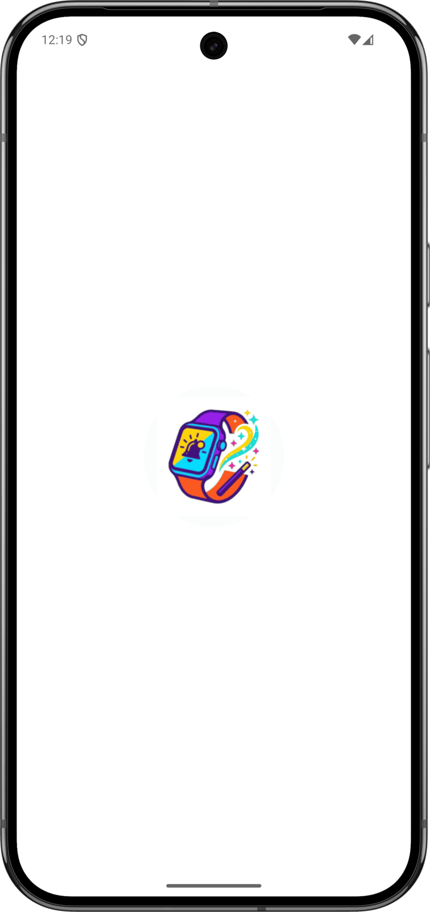

Choosen - Mobile Application
Choose a card from the deck and predict it.
Dart
Flutter
Ntfy
Choose a card from the deck and predict it.
Choosen is a Flutter app built for a card-based mentalism trick: the spectator freely browses through a shuffled 54-card deck and stops on any card they like — the app never shows the chosen card on screen, but privately notifies the magician which one it was.
The app opens on a blurred start screen; tapping Start reveals the full pile, drawn card by card with a slight offset and rotation so it reads as a real, imperfectly squared deck. The spectator drags the top card off in any direction to reveal the next one underneath, as many times as they like.
A hidden gesture opens the settings, and a reset button reshuffles the deck at any time.
Cards leave the pile with a free-direction swipe and snap back if the gesture is too short. The card underneath is promoted seamlessly, so the deck feels like a physical object, and when the pile runs out a restart flow reshuffles it.

The app is written in Flutter and Dart. Notifications are published to the ntfy service, which delivers them to the magician's phone, and the topic and delay are persisted locally.
The whole app — UI, gesture handling, animations, and state — is a single Flutter codebase (SDK ^3.9.2) targeting iOS and Android from one source tree.
Notifications are sent by POSTing directly to the public ntfy JSON API with a compact title (e.g.
Persists the magician's ntfy topic and notification delay locally between sessions.
Lightweight HTTP client used to publish notification payloads to the ntfy API.